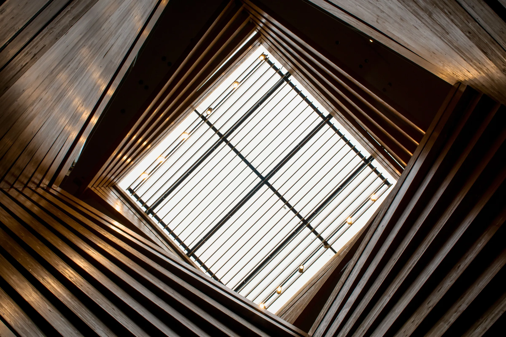
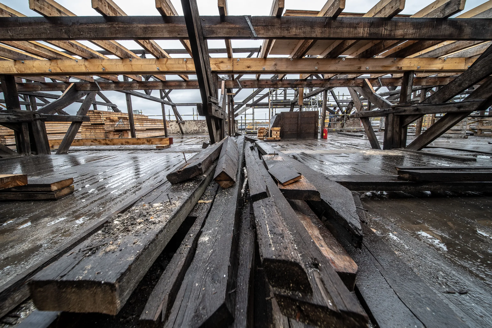
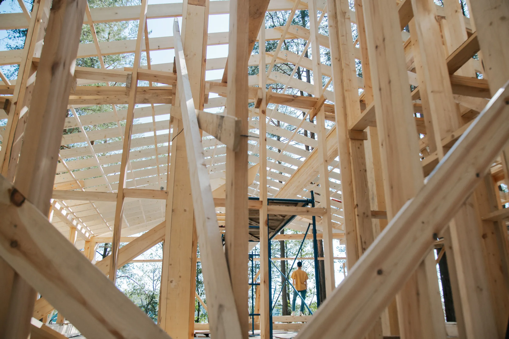
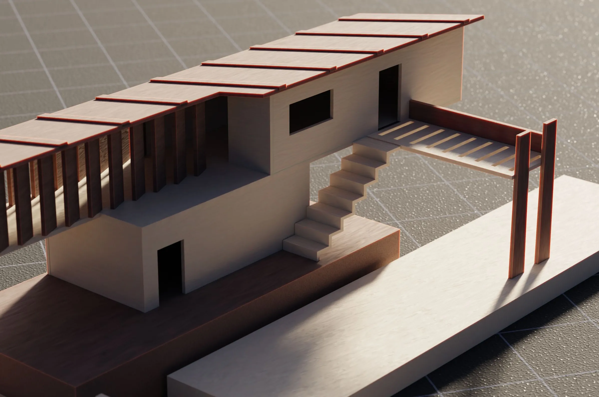

CBP is a chartered structural engineering design practice working across Brighton, London and the South East.
We work across a broad range of sectors and project scales, from small alterations to complex new-build and refurbishment projects, with a particular interest in working with existing and historic buildings.
“Testimonial 1”
Get in touch to get your project off the ground.




We are passionate about buildings — old and new, big and small.
We are practical in our approach. Drawing on extensive site experience and time on the tools, we understand how buildings are put together and how structural details work in practice.
We are problem solvers, driven to find thoughtful, project-specific solutions rather than applying a one-size-fits-all approach.
We are collaborative from conception to completion, working closely with clients, architects and builders to develop the right solution for each project.
We are responsive to queries, ideas and the inevitable challenges that arise on site.
“Testimonial 2”